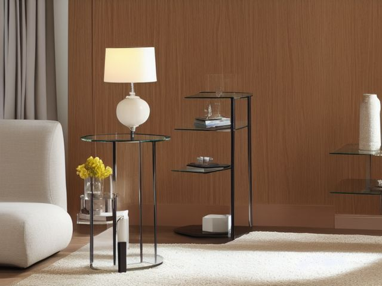

Living Room micro zone
The Side Tables and Lighting
Put a light, a drink and one or two personal things within reach of the chair without turning the table into a nightstand.
One session: 15-30 min. short, with most of it in Safety sorting out the lamp cord and whatever is loose in the little dish

What done looks like
One small tray per table with no more than four items on it, a coaster under the glass, a bulb that lights and has been wiped, and the lamp cord clipped down the table leg so no cable crosses the floor to the chair.
Check these before you start
- Poison, choke, or strangleLoose tablets in an open dish or an unlidded pill box sit at exactly grab height for a small child standing beside the chair.
- Water and electricityA glass of water next to the lamp base or a phone charging on the same small table means one knocked drink reaches live contacts.
- FallA lamp or charger cord running across the floor between the chair and the door is a trip nobody sees, because you walk that line without looking.
The six passes, in order
Work them in this order. Sorting after you have arranged things means arranging things you were about to remove.
Sort
Decide what stays. Everything else leaves the zone now.
Empty the little dish and the drawer onto the seat of the chair. The reading glasses with the wrong prescription, the dried-out pens, the foreign coins, the loose tablets, the charger for a phone nobody in the house owns and the coasters that never made it back to the coffee table each get a verdict now.
Straighten
Give what stays a home, placed where the hand actually reaches.
One tray per table sets the limit, and it sits on the side the person in that chair reaches from without leaning. The phone charger gets a single clip at the table edge so the cable stays up on the table instead of hanging into the walkway.
Shine
Clean it, and use the cleaning to inspect what you cannot see when it is full.
Wipe the bulb and the inside of the shade while the lamp is off and cool, then the table top and the ring marks hiding under the tray. A dusty bulb throws noticeably less light, and light is the whole reason this table has a lamp on it.
Safety
Make the zone safe for everybody who uses it, including the shortest person.
Water and electricity meet here more than anywhere else in the room, so the glass goes on the opposite side of the tray from the lamp base and the charger. Loose tablets in an open dish sit at chair height, which is grab height for a toddler, and the lamp cord must never cross the path between the chair and the door.
Standardize
Write down the best way you know today, so it survives you forgetting.
Four items on the tray is the rule, and it holds because a fifth thing has nowhere to sit but the bare table top, where you can see it from the doorway.
Sustain
Attach the reset to something that already happens, so it keeps itself.
When you plug your phone in for the night, whatever does not belong on the side table travels to its own room with you.
The medicine beside the chair
The tablets are on this table because taking them is easier when they are in reach of where you sit, and that is a real reason, not laziness. It is also how a bottle of painkillers ends up at knee height in the room where visiting children play. The rule: the bottle lives in a cupboard, and what sits on the side table is a single lidded weekly pill case, closed. You keep the reach that makes you take them, and you lose the open supply. If anyone under five ever visits this house, the case goes in the drawer rather than on the top, and the drawer gets a catch.
Cleaning it properly
A dusty bulb throws noticeably less light, and light is the whole reason this table has a lamp, so start there while it is off and cool. Then work down through the shade, the base, and the ring marks hiding under the tray.
Inspect as you clean. Cleaning is the only time you see the zone empty, so use it.
- A bulb that flickers, buzzes, or is browned at the tip, or a switch gone loose in its housing
- The inside of the shade scorched or discoloured close to the bulb
- The cord sheath cracked or gone brittle where it leaves the lamp base
- A table leg that rocks, a lifting veneer edge, or a pale heat bloom in the top under the tray
The standard that keeps it fixed
Four items on the tray, cord clipped to the leg, and nothing swallowable left uncapped.
Reset trigger. When you plug your phone in for the night, the side table gets cleared back to the tray.
The rest of the living room, in working order
Each of these is one session on its own. Finish this zone before you open the next.
- The Sofa and Seating
- The Coffee Table
- The Media Center
- The Bookshelves and Display
- The Side Tables and Lighting, you are here
- The Floor and Circulation Path
The Living Room in full, with what each of the 6 zones is for
Related reading
- What is 6S?
- This zone's safety pass, in full
- Is one spot in this zone always the one you skip?
- Why this zone gets messy again
- Decluttering vs. organizing
- Before you buy storage for this zone
- Still does not fit, even after the honest count?
- Does something in this zone actually get used somewhere else?
- Stuck on one item in this zone?
- Written the standard, but nobody else follows it?
- Does everyone in the house agree what "done" looks like here?
- Does more than one person use this zone?
- Found a duplicate of something in this zone?
- Why the standard above names one home per category
- Is the everyday item in this zone actually the easy one to reach?
- Not sure whether to keep something in this zone?
- Does this zone keep running out of something?
- Started this zone and stalled partway through?
- Have you stopped noticing the clutter in this zone?
When you want it off the screen
Carry The Side Tables and Lighting into the room
The method above is complete and free. The Whole House Print Pack puts The Side Tables and Lighting and the other 113 micro zones on 684 printable cards, so the steps you just read are not stuck behind a phone screen while your hands are full.
The Print Pack, 19 dollarsJust this zone, 4 dollarsOr draw a card free
The Side Tables and Lighting on its own is 4 dollars for 6 cards. All 114 micro zones is 19 dollars for 684. The whole house is the better buy; the single zone is here so you can take only what you are working on.
If The Side Tables and Lighting keeps fighting back, the real problem usually sits somewhere else in the room. A one hour virtual consult is 250 dollars: we find the function, the friction and the root cause together, and you keep a written standard for the space. See what a consult covers.